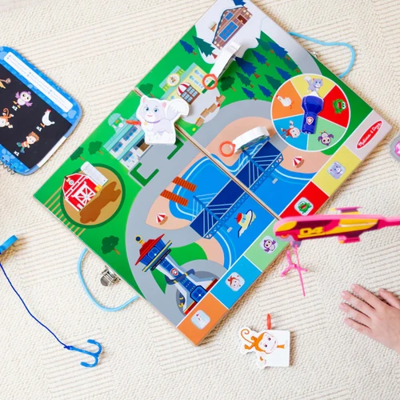
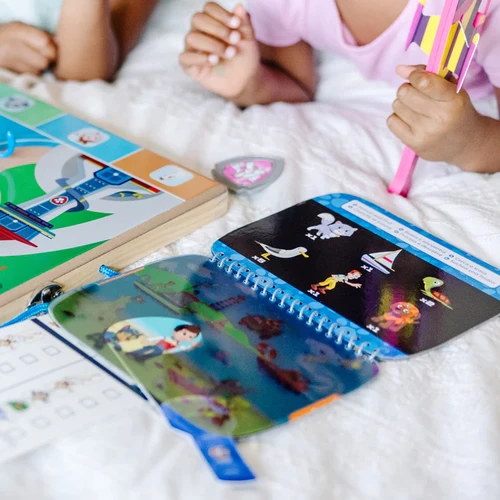
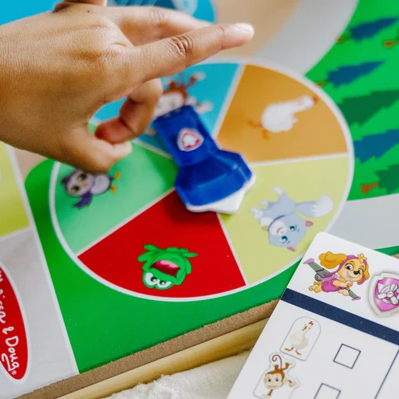
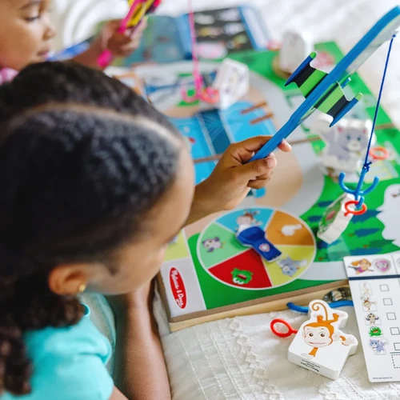
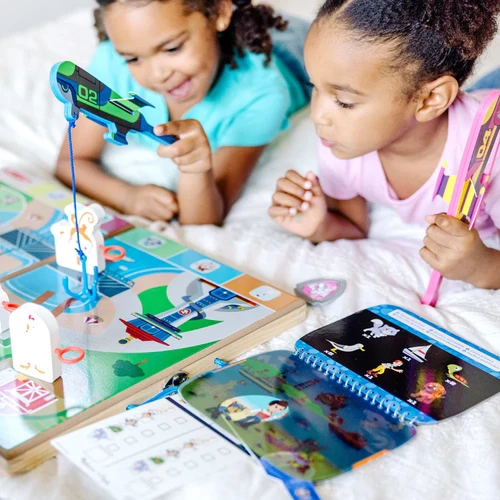
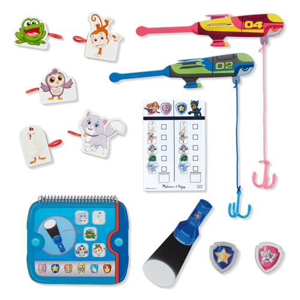
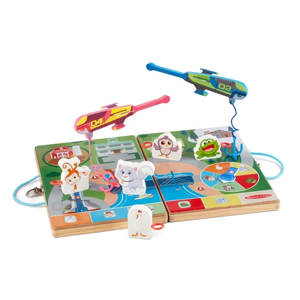

Paw Patrol Spy Find and Rescue
Paw Patrol and Blue Clues
R375Place PAW Patrol™ play pieces on the fold-out game board, then use spy drone-shaped fishing rods to hook and move them to their safe spots13-piece play set includes wooden take-along case/game board with built-in spinner, 2 badges, double-sided activity card/scorecard, 5 wooden play pieces, 2 wooden drone fishing rods, 3-page Flashlight Finder Pup Pad, Flashlight Finder flashlightPlay against an opponent or work together to act out unique PAW Patrol™ missions; great for imaginative and cooperative play and developing social and fine motor skillsPAW Patrol™ is always ready to help, inspiring preschoolers with a blend of teamwork, adventure, and humor as they develop social, emotional, and developmental skills through playMakes a great gift for preschoolers, ages 3 to 5, for hands-on, screen-free playItem # 33327
Enquire about this product







Paw Patrol Spy Find and Rescue at Kids Corner KZN
Paw Patrol Spy Find and Rescue is part of our Paw Patrol and Blue Clues collection. Kids Corner KZN stocks toys for learning, pretend play, creative play, gifting and everyday childhood discovery in South Africa.
Browse more Paw Patrol and Blue Clues toys